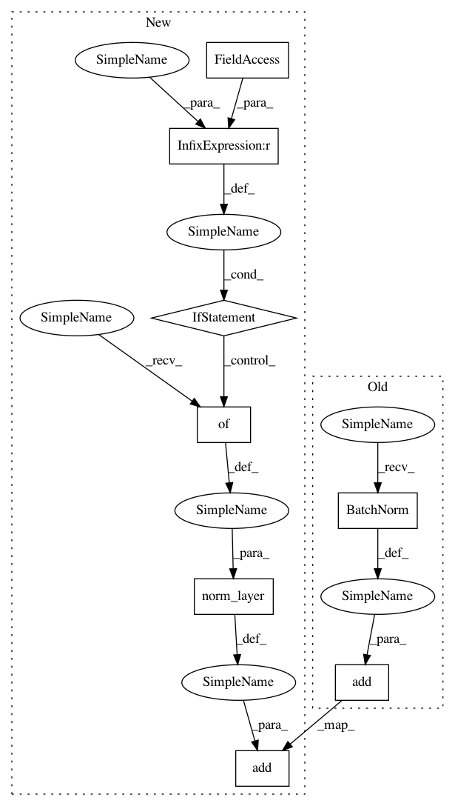

2318052dc79966bf36675606b7d992a347418292,gluoncv/model_zoo/cifarwideresnet.py,CIFARWideResNet,__init__,#CIFARWideResNet#,100
Before Change
assert len(layers) == len(channels) - 1
with self.name_scope():
self.features = nn.HybridSequential(prefix="")
self.features.add(nn.BatchNorm(scale=False, center=False))
self.features.add(nn.Conv2D(channels[0], 3, 1, 1, use_bias=False))
self.features.add(nn.BatchNorm())
After Change
**({} if norm_kwargs is None else norm_kwargs)))
self.features.add(nn.Conv2D(channels[0], 3, 1, 1, use_bias=False))
self.features.add(norm_layer(**({} if norm_kwargs is None else norm_kwargs)))
in_channels = channels[0]
for i, num_layer in enumerate(layers):
stride = 1 if i == 0 else 2
In pattern: SUPERPATTERN
Frequency: 3
Non-data size: 8
Instances
Project Name: dmlc/gluon-cv
Commit Name: 2318052dc79966bf36675606b7d992a347418292
Time: 2019-01-07
Author: cheungchih@gmail.com
File Name: gluoncv/model_zoo/cifarwideresnet.py
Class Name: CIFARWideResNet
Method Name: __init__
Project Name: dmlc/gluon-cv
Commit Name: 2318052dc79966bf36675606b7d992a347418292
Time: 2019-01-07
Author: cheungchih@gmail.com
File Name: gluoncv/model_zoo/senet.py
Class Name: SENet
Method Name: __init__